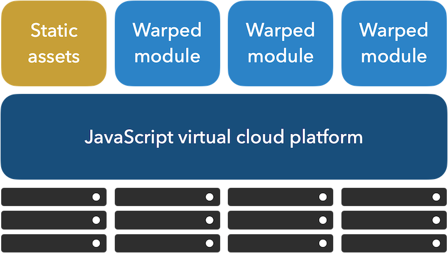
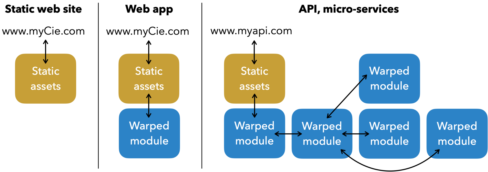

JavaScript Virtual Cloud Introduction
Like a JavaScript virtual machine that abstracts the physical computer used to run code, our JavaScript virtual cloud abstracts the physical cloud servers that runs the services. As a developer you never manage any aspects of the real cloud infrastructure used, for example you don't use HTTP protocol, you use JavaScript calls to run your services.

One warped module = one microservice
Our Virtual cloud relies on our new WarpJS technology that warps (transforms) a standard Node.js module (that exports some asynchronous functions) into a cloud microservice. When a module has been warped we call it a Warped module.
A Warped module can be imported in a browser frontend or in a Node.js script like a standard module. To use it, you just have to call its functions. You never use HTTP protocol, you stay at JavaScript language all time.
Any kind of asynchronous JavaScript function can be warped. You can use JavaScript objects parameters as you want to create your right API calls.
To get the real cloud service running you have to deploy each warped module on an infrastructure. By redeploying you can change the execution infrastructure for a warped module over time. If you have several warped modules you can use one or several infrastructure as you like. Have a look to our Infrastructure support for info about our supported infrastructures.
We manage everything related to deployment, setup and execution on the real cloud infrastructures. As a developer you'll never have to manage this, you create warped modules and deploy them. After being deployed, each warped module function becomes an API running on a server.
Concretely to create a cloud service: create a Node.js module, warp it, import the warped module in a browser frontend or a Node.js script and calls its JavaScript functions, deploy and run.
Static assets
Our Virtual cloud provides also storing of static assets that will be live on a URL. We provide a way to create your subdomain on our scaledynamics.cloud. You can also connect your own domains.
Use cases
Our Virtual cloud gives you the possibility to create what you need from a cloud:
- from a static website to API
- Micro-services for computing
- SaaS implementation
- and so many use cases

Next
In the next page we describe the unified developer workflow to build and develop warped modules on your computer using an emulator with live reload, and deploy them in one command line.